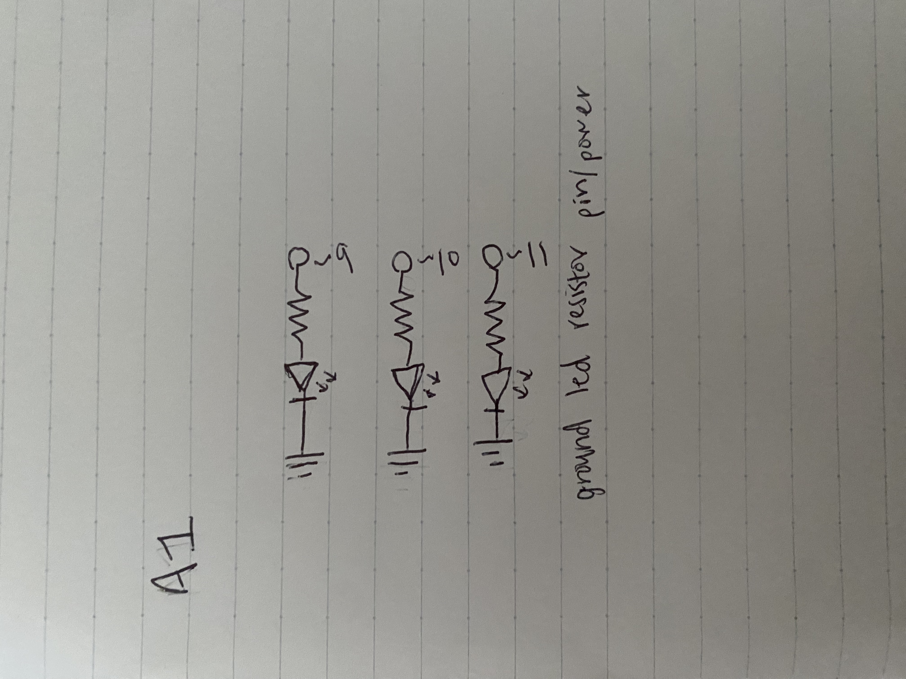

Emma Drapp's A1: Blink!
Schematic:

The schematic for this assignment consists of three different pathways each starting at a pin on the arduino, then going through a 330 Ohm resistor, LED, and then ground.
The resistor used was calculated through the equation V=IR as seen below.
Circuit:
Here is the circuit made from the schematic and calculations above:
This is the circuit to birds eye view. The black wires are connecting the breadboard to ground and the red wires are connecting each pathway to its pin.

Here is a side view of the circuit in action.
Firmware:
Here is the code used for A1: Blink. This code initializes each pin and then runs a redloop, blueloop, then greenloop, each making the light blink for a shorter period of time sequentially.
/*
A1 Blink
This code is based off of the ardunio example blink program and edited to fit the specifications of assignment A1
*/
// the setup function runs once when you press reset or power the board
void setup() {
// initialize digital pin 9 as the red LED output.
pinMode(9, OUTPUT);
// initialize digital pin 10 as the blue LED output.
pinMode(10, OUTPUT);
// initialize digital pin 11 as the green LED output.
pinMode(11, OUTPUT);
}
// the red loop function makes the red light blink for 1 second
void redloop() {
digitalWrite(9, HIGH); // turn the red LED on (HIGH is the voltage level)
delay(1000); // wait for a second
digitalWrite(9, LOW); // turn the red LED off by making the voltage LOW
delay(1000); // wait for a second
}
// the blue loop function makes the blue light blink for half a secind
void blueloop() {
digitalWrite(10, HIGH); // turn the blue LED on (HIGH is the voltage level)
delay(500); // wait for half a second
digitalWrite(10, LOW); // turn the blue LED off by making the voltage LOW
delay(500); // wait for half a second
}
// the green loop function makes the green light blink for 0.1 seconds
void greenloop() {
digitalWrite(11, HIGH); // turn the green LED on (HIGH is the voltage level)
delay(100); // wait for 0.1 second
digitalWrite(11, LOW); // turn the green LED off by making the voltage LOW
delay(100); // wait for 0.1 second
}
// the loop function runs over and over again forever
void loop() {
redloop(); // initializes the loop to blink the red LED
blueloop(); // initializes the loop to blink the blue LED
greenloop(); // initializes the loop to blink the green LED
}
Circuit’s Operation:
Finally, here is a gif showing the circuit in action!